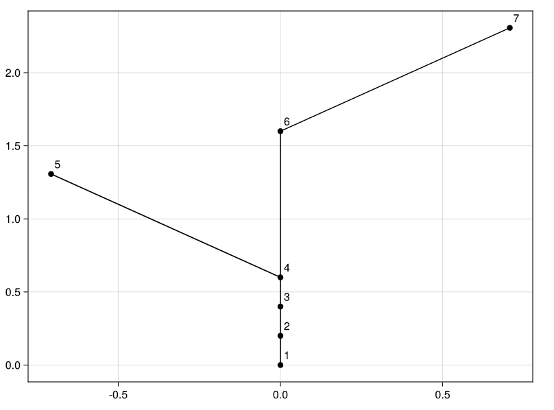

Plotting
The companion package PlantGeom.jl provides plots recipes to plot MTGs using either Plots.jl or Makie.jl.
To do so, you just have to use either of the packages, and choose a backend. Let's plot the MTG using CairoMakie:
# import Pkg; Pkg.add("CairoMakie"); Pkg.add("PlantGeom")
using CairoMakie, PlantGeom
file = joinpath(dirname(dirname(pathof(MultiScaleTreeGraph))),"test","files","simple_plant.mtg")
mtg = read_mtg(file)
diagram(mtg)